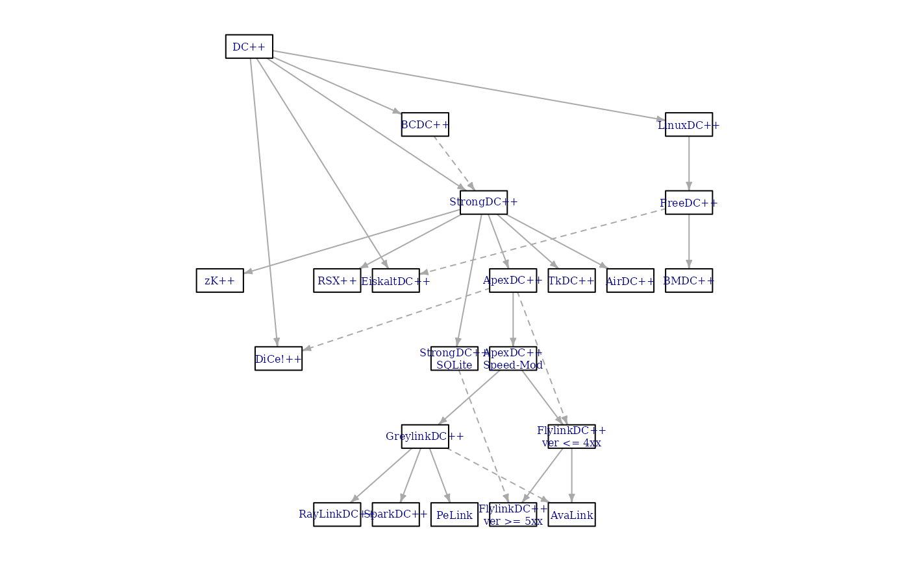
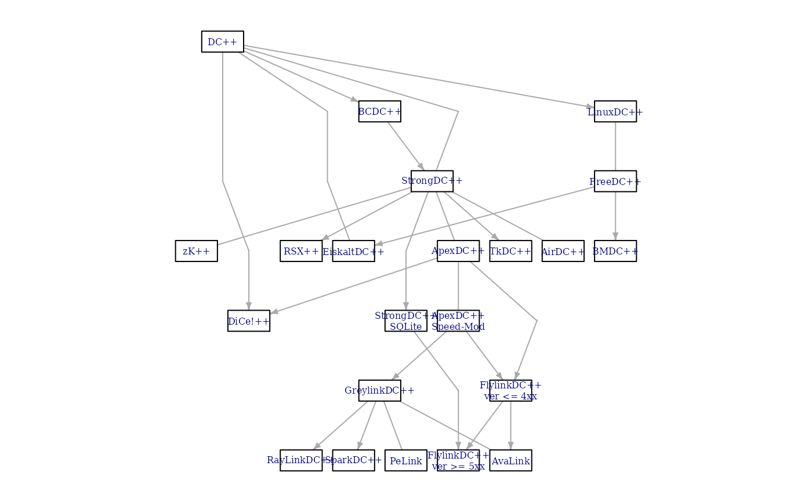
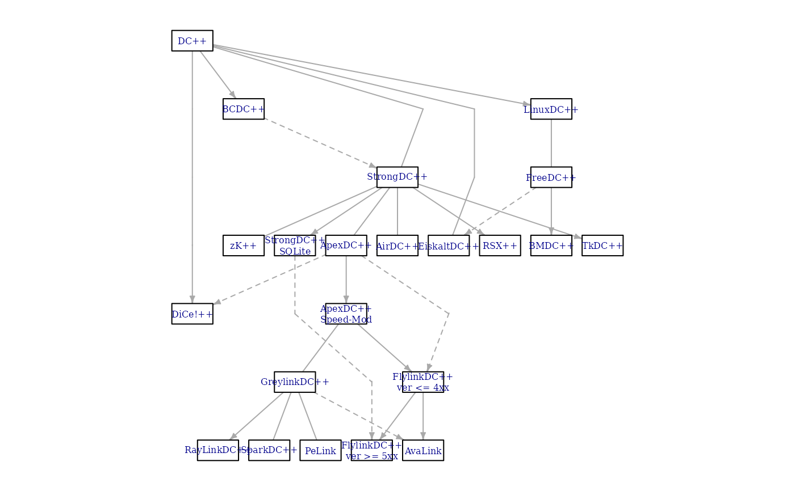

Sugiyama layout algorithm for layered directed acyclic graphs. The algorithm minimized edge crossings.
Usage
layout_with_sugiyama(
graph,
layers = NULL,
hgap = 1,
vgap = 1,
maxiter = 100,
weights = NULL,
attributes = c("default", "all", "none")
)
with_sugiyama(...)Arguments
- graph
The input graph.
- layers
A numeric vector or
NULL. If notNULL, then it should specify the layer index of the vertices. Layers are numbered from one. IfNULL, then igraph calculates the layers automatically.- hgap
Real scalar, the minimum horizontal gap between vertices in the same layer.
- vgap
Real scalar, the distance between layers.
- maxiter
Integer scalar, the maximum number of iterations in the crossing minimization stage. 100 is a reasonable default; if you feel that you have too many edge crossings, increase this.
- weights
Optional edge weight vector. If
NULL, then the 'weight' edge attribute is used, if there is one. SupplyNAhere and igraph ignores the edge weights. These are used only if the graph contains cycles; igraph will tend to reverse edges with smaller weights when breaking the cycles.- attributes
Which graph/vertex/edge attributes to keep in the extended graph. ‘default’ keeps the ‘size’, ‘size2’, ‘shape’, ‘label’ and ‘color’ vertex attributes and the ‘arrow.mode’ and ‘arrow.size’ edge attributes. ‘all’ keep all graph, vertex and edge attributes, ‘none’ keeps none of them.
- ...
Passed to
layout_with_sugiyama().
Value
A list with the components:
- layout
The layout, a two-column matrix, for the original graph vertices.
- layout.dummy
The layout for the dummy vertices, a two column matrix.
- extd_graph
The original graph, extended with dummy vertices. The ‘dummy’ vertex attribute is set on this graph, it is a logical attributes, and it tells you whether the vertex is a dummy vertex. The ‘layout’ graph attribute is also set, and it is the layout matrix for all (original and dummy) vertices.
Details
This layout algorithm is designed for directed acyclic graphs where each vertex is assigned to a layer. Layers are indexed from zero, and vertices of the same layer will be placed on the same horizontal line. The X coordinates of vertices within each layer are decided by the heuristic proposed by Sugiyama et al. to minimize edge crossings.
You can also try to lay out undirected graphs, graphs containing cycles, or graphs without an a priori layered assignment with this algorithm. igraph will try to eliminate cycles and assign vertices to layers, but there is no guarantee on the quality of the layout in such cases.
The Sugiyama layout may introduce “bends” on the edges in order to obtain a visually more pleasing layout. This is achieved by adding dummy nodes to edges spanning more than one layer. The resulting layout assigns coordinates not only to the nodes of the original graph but also to the dummy nodes. The layout algorithm will also return the extended graph with the dummy nodes.
For more details, see the reference below.
References
K. Sugiyama, S. Tagawa and M. Toda, "Methods for Visual Understanding of Hierarchical Systems". IEEE Transactions on Systems, Man and Cybernetics 11(2):109-125, 1981.
See also
Other graph layouts:
add_layout_(),
component_wise(),
layout_(),
layout_as_bipartite(),
layout_as_star(),
layout_as_tree(),
layout_in_circle(),
layout_nicely(),
layout_on_grid(),
layout_on_sphere(),
layout_randomly(),
layout_with_dh(),
layout_with_fr(),
layout_with_gem(),
layout_with_graphopt(),
layout_with_kk(),
layout_with_lgl(),
layout_with_mds(),
merge_coords(),
norm_coords(),
normalize()
Author
Tamas Nepusz ntamas@gmail.com
Examples
## Data taken from http://tehnick-8.narod.ru/dc_clients/
DC <- graph_from_literal(
"DC++" -+ "LinuxDC++":"BCDC++":"EiskaltDC++":"StrongDC++":"DiCe!++",
"LinuxDC++" -+ "FreeDC++", "BCDC++" -+ "StrongDC++",
"FreeDC++" -+ "BMDC++":"EiskaltDC++",
"StrongDC++" -+ "AirDC++":"zK++":"ApexDC++":"TkDC++",
"StrongDC++" -+ "StrongDC++ SQLite":"RSX++",
"ApexDC++" -+ "FlylinkDC++ ver <= 4xx",
"ApexDC++" -+ "ApexDC++ Speed-Mod":"DiCe!++",
"StrongDC++ SQLite" -+ "FlylinkDC++ ver >= 5xx",
"ApexDC++ Speed-Mod" -+ "FlylinkDC++ ver <= 4xx",
"ApexDC++ Speed-Mod" -+ "GreylinkDC++",
"FlylinkDC++ ver <= 4xx" -+ "FlylinkDC++ ver >= 5xx",
"FlylinkDC++ ver <= 4xx" -+ AvaLink,
"GreylinkDC++" -+ AvaLink:"RayLinkDC++":"SparkDC++":PeLink
)
## Use edge types
E(DC)$lty <- 1
E(DC)["BCDC++" %->% "StrongDC++"]$lty <- 2
E(DC)["FreeDC++" %->% "EiskaltDC++"]$lty <- 2
E(DC)["ApexDC++" %->% "FlylinkDC++ ver <= 4xx"]$lty <- 2
E(DC)["ApexDC++" %->% "DiCe!++"]$lty <- 2
E(DC)["StrongDC++ SQLite" %->% "FlylinkDC++ ver >= 5xx"]$lty <- 2
E(DC)["GreylinkDC++" %->% "AvaLink"]$lty <- 2
## Layers, as on the plot
layers <- list(
c("DC++"),
c("LinuxDC++", "BCDC++"),
c("FreeDC++", "StrongDC++"),
c(
"BMDC++", "EiskaltDC++", "AirDC++", "zK++", "ApexDC++",
"TkDC++", "RSX++"
),
c("StrongDC++ SQLite", "ApexDC++ Speed-Mod", "DiCe!++"),
c("FlylinkDC++ ver <= 4xx", "GreylinkDC++"),
c(
"FlylinkDC++ ver >= 5xx", "AvaLink", "RayLinkDC++",
"SparkDC++", "PeLink"
)
)
## Check that we have all nodes
all(sort(unlist(layers)) == sort(V(DC)$name))
#> [1] TRUE
## Add some graphical parameters
V(DC)$color <- "white"
V(DC)$shape <- "rectangle"
V(DC)$size <- 20
V(DC)$size2 <- 10
V(DC)$label <- lapply(V(DC)$name, function(x) {
paste(strwrap(x, 12), collapse = "\n")
})
E(DC)$arrow.size <- 0.5
## Create a similar layout using the predefined layers
lay1 <- layout_with_sugiyama(DC, layers = apply(sapply(
layers,
function(x) V(DC)$name %in% x
), 1, which))
## Simple plot, not very nice
par(mar = rep(.1, 4))
plot(DC, layout = lay1$layout, vertex.label.cex = 0.5)

## Sugiyama plot
plot(lay1$extd_graph, vertex.label.cex = 0.5)

## The same with automatic layer calculation
## Keep vertex/edge attributes in the extended graph
lay2 <- layout_with_sugiyama(DC, attributes = "all")
plot(lay2$extd_graph, vertex.label.cex = 0.5)

## Another example, from the following paper:
## Markus Eiglsperger, Martin Siebenhaller, Michael Kaufmann:
## An Efficient Implementation of Sugiyama's Algorithm for
## Layered Graph Drawing, Journal of Graph Algorithms and
## Applications 9, 305--325 (2005).
ex <- graph_from_literal(
0 -+ 29:6:5:20:4,
1 -+ 12,
2 -+ 23:8,
3 -+ 4,
4,
5 -+ 2:10:14:26:4:3,
6 -+ 9:29:25:21:13,
7,
8 -+ 20:16,
9 -+ 28:4,
10 -+ 27,
11 -+ 9:16,
12 -+ 9:19,
13 -+ 20,
14 -+ 10,
15 -+ 16:27,
16 -+ 27,
17 -+ 3,
18 -+ 13,
19 -+ 9,
20 -+ 4,
21 -+ 22,
22 -+ 8:9,
23 -+ 9:24,
24 -+ 12:15:28,
25 -+ 11,
26 -+ 18,
27 -+ 13:19,
28 -+ 7,
29 -+ 25
)
layers <- list(
0, c(5, 17), c(2, 14, 26, 3), c(23, 10, 18), c(1, 24),
12, 6, c(29, 21), c(25, 22), c(11, 8, 15), 16, 27, c(13, 19),
c(9, 20), c(4, 28), 7
)
layex <- layout_with_sugiyama(ex, layers = apply(
sapply(
layers,
function(x) V(ex)$name %in% as.character(x)
),
1, which
))
origvert <- c(rep(TRUE, vcount(ex)), rep(FALSE, nrow(layex$layout.dummy)))
realedge <- as_edgelist(layex$extd_graph)[, 2] <= vcount(ex)
plot(layex$extd_graph,
vertex.label.cex = 0.5,
edge.arrow.size = .5,
vertex.size = ifelse(origvert, 5, 0),
vertex.shape = ifelse(origvert, "square", "none"),
vertex.label = ifelse(origvert, V(ex)$name, ""),
edge.arrow.mode = ifelse(realedge, 2, 0)
)